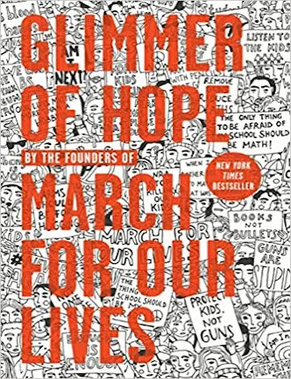
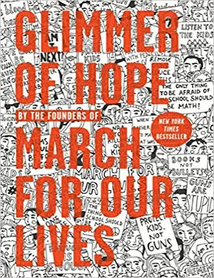

![<h4 style='text-align:center; margin-top:0;'><i>How I Resist: Activism and Hope for a New Generation</i></h4>
<h5 style='text-align:center'>edited by Maureen Johnson
</br>(2018, Wednesday Books)</h5>
In <i>How I Resist</i>, YA novelist and political podcast host Maureen Johnson brings together essays, interviews, illustrations, and more from 30 authors, artists and activists. The diverse range of these voices cover a host of social and political issues and movements and explore a variety of different approaches to activism and change-making, making this book a trove of ideas, advice, and motivation for young people who want to see change in their world.
<p><a href='https://us.macmillan.com/books/9781250168368' target='_blank'>Read an excerpt and check out reviews of this book!</a></p>
</br></br><h5>If you like this book, check out these titles as well:</h5>
<dl>
<dt><a href='https://kellybjensen.com/here-we-are-feminism-for-the-real-world/' target='_blank'><i>Here We Are: Feminism for the Real World </i>edited by Kelly Jensen</a> (2017, Algonquin Young Readers)</dt>
<dd>If you enjoyed the format of <i>How I Resist</i>, you're sure to love Kelly Jensen's <i>Here We Are</i>, which takes a similar approach to tackle feminism, as well as Jensen's books on mental health and bodies, <i>(Don’t) Call Me Crazy: 33 Voices Start The Conversation About Mental Health </i>and <i>Body Talk: 37 Voices Explore Our Radical Anatomy</i>.</dd>
<dt><a href='https://www.youtube.com/watch?v=_Hm5UmR7TSs' target='_blank'><i>#NotYourPrincess </i>edited by Lisa Charleyboy and Mary Beth Leatherdale</a> (2017, Annick Press)</dt>
<dd>Another YA anthology of essays, poetry, and art, <i>#NotYourPrincess </i>uplifts and celebrates the voices of Indigenous women. </dd>
<dt><a href='https://www.youtube.com/watch?v=SHUpBhC2pgg' target='_blank'><i>All Boys Aren't Blue: A Memoir-Manifesto </i>by George M. Johnson</a> (2020, Farrar, Straus and Giroux)</dt>
<dd>Author, journalist, and activist George M. Johnson touches on many of the topics explored in <i>How I Resist</i>, such as gender identity, sexual orientation, and race, in this collection of essays reflecting on his childhood and adolescence.</dd>
</dl>](assets/howiresist.jpg "https://us.macmillan.com/books/9781250168368")
![<h4 style='text-align:center; margin-top:0;'><i>You Call This Democracy? How to Fix Our Government and Deliver Power to the People</i></h4>
<h5 style='text-align:center'>by Elizabeth Rusch
</br>(2020, HMH Books)</h5>
This non-partisan, action-oriented book for young readers explains the basics of the US democratic process, laying out how voting works and why our system is flawed. Issues like gerrymandering, voter suppresion, the Electoral College, and much more are explained in easy-to-understand language. The content is backed by resource lists at the end of each chapter, as well as at the end of the book, which encourage readers to engage in their own research and explore the issues further on their own. With actionable suggestions for readers of all ages, this is book is the perfect entry-point for anyone invested in this country's democracy, even those who are not yet old enough to vote.
<p><a href='https://www.youtube.com/watch?v=_x4FMDMpypc' target='_blank'>Listen to author Elizabeth Rausch explain why you should read this book!</a></p>
</br></br><h5>If you like this book, check out these titles as well:</h5>
<dl>
<dt><a href='https://www.bloomsbury.com/us/one-person-no-vote-ya-edition-9781547601073/' target='_blank'><i>One Person, No Vote: How Not All Voters Are Treated Equally </i>by Carol Anderson and Tonya Bolden</a> (2019, Bloomsbury YA)</dt>
<dd>Adapted for a younger audience from the acclaimed non-fiction book <i>One Person, No Vote: How Voter Suppression Is Destroying Our Democracy</i>, this book dives into many of the same issues as <i>You Call This Democracy?</i> and calls on young people to take action.</dd>
<dt><a href='https://www.youtube.com/watch?v=s2-NzClywNI' target='_blank'><i>A Young People's History of the United States: Columbus to the War on Terror </i>by Howard Zinn</a> (2009, Triangle Square)</dt>
<dd><i>A Young People's History </i> is the perfect complement to <i>You Call This Democracy?</i>, particularly for readers who are hungry for a more in-depth look at the history of the US and how we got where we are.</dd>
<dt><a href='https://www.youtube.com/watch?v=Y_E0Ji8tkvw&' target='_blank'><i>Addicted to War: Why The US Can't Kick Militarism </i>by Joel Andreas</a> (2015, AK Press)</dt>
<dd>Its comic book format and short length make this a relatively quick read, but it is packed to the brim with research-backed information covering the history of American involvement in wars and military conflicts, war profiteering, and what readers can do to push back against militarism.</dd>
</dl>](assets/youcallthisdemocracy.jpg "https://www.youtube.com/watch?v=_x4FMDMpypc")
![<h4 style='text-align:center; margin-top:0;'><i>How to Change Everything: A Young Human's Guide to Protecting the Planet and Each Other</i></h4>
<h5 style='text-align:center'>by Naomi Klein with Rebecca Stefoff
</br>(2021, Atheneum Books for Young Readers)</h5>
<i>How to Change Everything</i> is a comprehensive guide to understanding the global implications of climate change and taking action to protect the planet and its people. The book is organized into three sections—“Where We Are,” “How We Got Here,” and “What Happens Next”—and discusses the history of climate change, delving into climate science, climate politics and policies, and climate justice, and then provides actionable solutions to work towards. Filled with inspiring stories of children and teens who have been influential in the climate justice movement, as well as the invaluable wisdom and expertise from renowned activist, professor, and author, Naomi Klein, <i>How to Change Everything</i> is a must-read for the next generation of climate justice activists.
<p><a href='https://www.youtube.com/watch?v=Hq3Gbu6XjlQ' target='_blank'>Watch author Naomi Klein discuss this book with teen climate activists Miko and Isaac Vergun!</a></p>
</br></br><h5>If you like this book, check out these titles as well:</h5>
<dl>
<dt><a href='https://www.youtube.com/watch?v=leqWuYOv2Cw' target='_blank'><i>We Rise: The Earth Guardians Guide to Building a Movement That Restores the Planet </i>by Xiuhtezcatl Martinez</a> (2017, Rodale Books)</dt>
<dd>In this book, teen environmental activist and hip-hop artist Xiuhtezcatl Martinez offers practical solutions for teens interested in getting involved in climate change activism.</dd>
<dt><a href='https://books.google.com/books/about/Oak_Flat.html?id=oCikDwAAQBAJ&printsec=frontcover&source=kp_read_button&newbks=1&newbks_redir=1' target='_blank'><i>Oak Flat: A Fight for Sacred Land in the American West </i>by Lauren Redniss</a> (2020, Random House)</dt>
<dd><i>Oak Flat </i></a>ties together art and prose to bring to life the true story of two Apache families' ongoing efforts to protect sacred lands, water, and endangered flora and fauna from mining.</dd>
<dt><a href='https://www.youtube.com/watch?v=KGA2iiJCfb0' target='_blank'><i>One Earth: People of Color Protecting Our Planet </i>by Anuradha Rao</a> (2020, Orca Book)</dt>
<dd>This book shines the light on the contributions of people of color to the climate change movement through the stories of 20 young people doing impactful work to restore and protect the environment.</dd>
</dl>](assets/howtochangeeverything.jpeg "https://www.youtube.com/watch?v=Hq3Gbu6XjlQ") Glimmer of Hope: How Tragedy Sparked a Movement
Glimmer of Hope: How Tragedy Sparked a Movement
by The March for Our Lives founders (2018, Razorbill)
Written by the teenage organizers of The March for Our Lives themselves, this book chronicles the students' journeys from the Stoneman Douglas High School shooting through the following weeks of student-led political action and protest, culminating in the March for Our Lives, and then discusses their plans and hopes for the future of the movement. Their first-hand accounts of how they turned their emotions about the mass shooting into hope by organizing one of the largest protests in American history serve as an inspiring guide for young people seeking to enact change, as well as a reminder that you don't need to be old enough to vote to make your voice heard.Read more about this book and listen to an excerpt from the audiobook!
If you like this book, check out these titles as well:
- Poisoned Water: How the Citizens of Flint, Michigan, Fought for Their Lives and Warned the Nation by Candy J. Cooper and Marc Aronson (2020, Bloomsbury)
- In this book, Pulitzer finalist Candy J. Cooper tells the story of the Flint water crisis including the history of systemic racism and discrimination leading up to it and the actions taken by Flint families fighting for access to safe water.
- When They Call You a Terrorist (Young Adult Edition): A Story of Black Lives Matter and the Power to Change the World by Patrisse Khan-Cullors and asha bandele (2020, Wednesday Books)
- This book shares Black Lives Matter cofounder Patrisse Khan-Cullors' experience growing up Black in Van Nuys, California, illustrating the lasting impact of white supremacy through her personal stories, then calls on readers to take action for themselves.
by Kimberly Drew (2020, Penguin Workshop)
Part of the Pocket Change Collective Series, This is What I Know About Art discusses the connection between art and protest. Author Kimberly Drew shares her journey from trading her lunch for art in kindergarten to becoming a successful art curator, drawing from her experiences creating a space for herself and others like her in the art world to inspire readers to demand the change they want to see.Watch Kimberly Drew discuss this book with The Cut!
If you like this book, check out these titles as well:
- Pocket Change Collective Series (Penguin Workshop)
- Check out the other titles in the Pocket Change Collective series: Food-Related Stories, Skate for Your Life, Continuum, Concrete Kids, Taking on the Plastics Crisis, The New Queer Conscience, Imaginary Borders, and Beyond the Gender Binary. Each of these is a quick read with a big impact, and the series spans a range of issues from food, LGBTQ+ identities, environmental concerns, and race.
- Dare to Disappoint: Growing Up in Turkey by Ozge Samanci (2015, Farrar Straus Giroux Books for Young Readers)
- This autobiographical graphic memoir recounts the author's struggles to find space to explore her own dreams amidst societal pressures, parental expectations, and a backdrop of political and milatary turmoil in Turkey, and it is sure to strike a chord with aspiring artists, as well as any young person searching for their own voice.
![<h4 style='text-align:center; margin-top:0;'><i>Youth to Power: Your Voice and How to Use It</i></h4>
<h5 style='text-align:center'>by Jamie Margolin
</br>(2020, Hachette Go)</h5>
Teen climate activist Jamie Margolin draws on her extensive experience, as well as that of the numerous other activists interviewed for this book, to provide a handbook for other young people who want to use their voices to make change. Divided into 18 chapters, each of which focuses on a different approach to or aspect of activism, this book includes practical advice for everything from political writing and publishing, activism through art, action organizing, lobbying, and using social media effectively. There are also chapters that focus on safety and well-being of young activists, including suggestions for prioritizing mental health and self-care in activist spaces, avoiding exploitative relationships with businesses, and preventing ego and jealousy from undermining your work or well-being.
<p><a href='https://www.hachettego.com/titles/jamie-margolin/youth-to-power/9780738246666/' target='_blank'>Learn more about this book and read an excerpt, including the foreward by Greta Thunberg!</a></p>
</br></br><h5>If you like this book, check out these titles as well:</h5>
<dl>
<dt><a href='https://www.youtube.com/watch?v=s2-NzClywNI' target='_blank'><i>Putting Peace First: 7 Commitments to Change the World </i>by Eric David Dawson</a> (2018, Viking Books for Young Readers)</dt>
<dd>Another guide to making change written by a teen activist, <i>Putting Peace First </i> is an essential handbook for young peacemakers.</dd>
<dt><a href='https://www.akpress.org/staysolid.html' target='_blank'><i>Stay Solid! A Radical Handbook for Youth </i>edited by Matt Hern and the Purple Thistle Centre</a> (2015, AK Press)</dt>
<dd>Much like <i>Youth to Power</i>, this handbook for young radicals brings together numerous voices to provide practical advice for teens working to create change in their communities.</dd>
</dl>](assets/youthtopower.jpeg "https://www.hachettego.com/titles/jamie-margolin/youth-to-power/9780738246666/")
about this shelf
The "You(th) Can Do Anything!" shelf is a virtual book browsing tool designed for youth in the 11-17 age range and themed around books on youth activism and social change. To provide maximum accessibility and convenience to the target age group, and because the increasing ubiquity of smartphones is making mobile-friendly design useful as an approach to narrowing the technology gap, I felt it was important to use a responsive design when creating this shelf, so that it could easily be used on any device, regardless of screen size. When selecting books for this shelf, I looked to professional reviews from School Library Journal and Kirkus Reviews, as well as consumer reviews to gauge general appeal. I also evaluated each of the six titles myself to ensure that they were credible, age-appropriate, and likely to appeal to teens and tweens interested in activism. In an effort both to broaden the appeal of this shelf and maximize exposure to different topics, I selected books that related to the theme from a variety of angles, including climate change, government and politics, gun violence, and art as activism.
In the future, I would love to expand on this by adding additional shelves for other topics and use it on a public library website or as an interactive display on a screen in the library's teen section. Additional links could easily be added to help users figure out where to find the books in the library, put holds on physical books, or check out eBooks and audiobooks. This particular shelf would also be a good fit for a secondary school environment, where it could be used as a themed book display in the school library, or provided by the school librarian to middle or high school teachers as a resource to share in relevant classes, such as civics or environmental science.